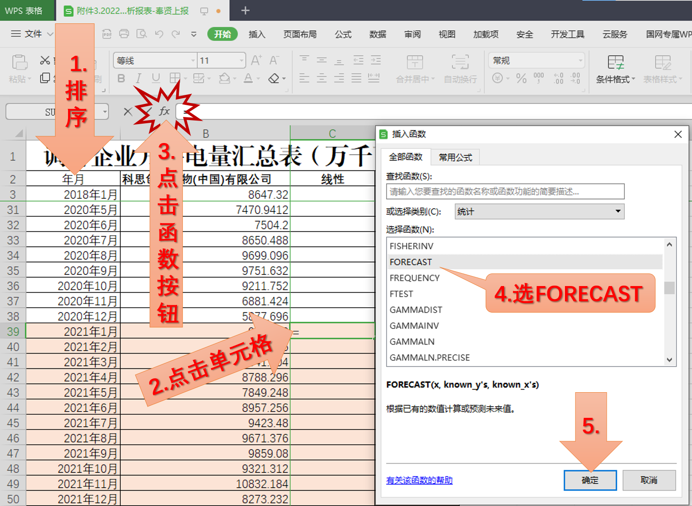

去年底就开始准备培训材料，原先准备给负荷预测人员进行一个专业培训，结果提前5天收到培训通知，第一次的培训就是普及性培训，补充了点关于电量概念的材料，4小时的PPT2小时讲完。也算是开了个头。
修订记录
| 日期 | 内容 |
|---|---|
| 2023-04-13 19:01:10 | 补写一个blog，开始了培训工作 |
过程
上周四（2023年4月6日），收到计划处要求，开展一个国网调考的培训，希望我讲讲电量预测的基本知识。答应下来，用了周六、周日两天在原来准备的负荷预测入门PPT的基础上加了关于电量的内容，其他也来不及删改了，怕逻辑打乱。4月12日上午在培训中心A503教室（找了半天）开讲，尽管辛辛苦苦做的63页ppt只讲了2个小时，但我的《负荷预测技术与艺术》系列讲座也算是开张了1。
讲座主要将了3块内容：电量分类和预测的概念、预测方法和Excel实例。这里就放两张图片记录一下。
概念部分
电量关系
预测流程
预测方法部分
实例部分

后记
尽管时间所限，感觉讲的不是很透彻，基本的概念应该还是讲清楚了。同时，也发现需要对传统预测方法也整理一个分类图。记得下一次讲课还是需要带自己的笔记本，培训中心的机子居然不能用演讲者视图，写的备注都没用，吐槽一下。
再次感叹一下，Quarto还是阔以的。
尾注
2016年给蒙东公司的讲课应该是第一次负荷预测培训，这里的第一次是指在公司里的第一次，当然也是自己觉得可以讲负荷预测后的第一次。↩︎